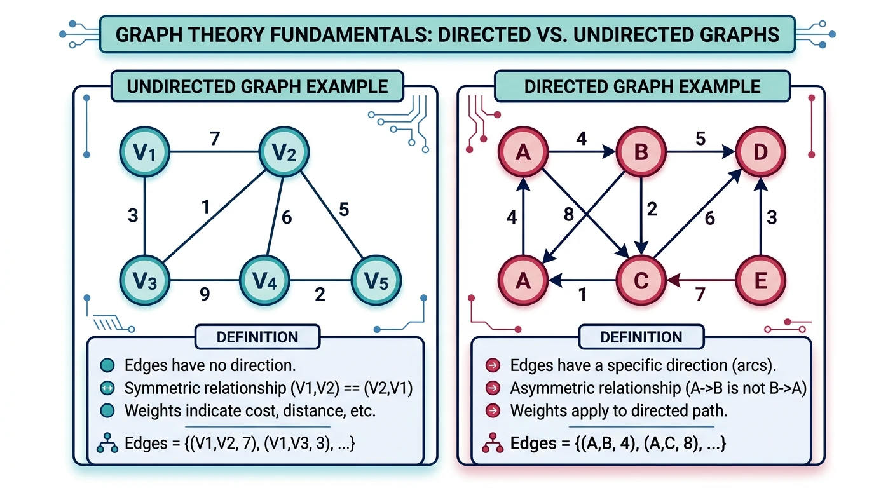
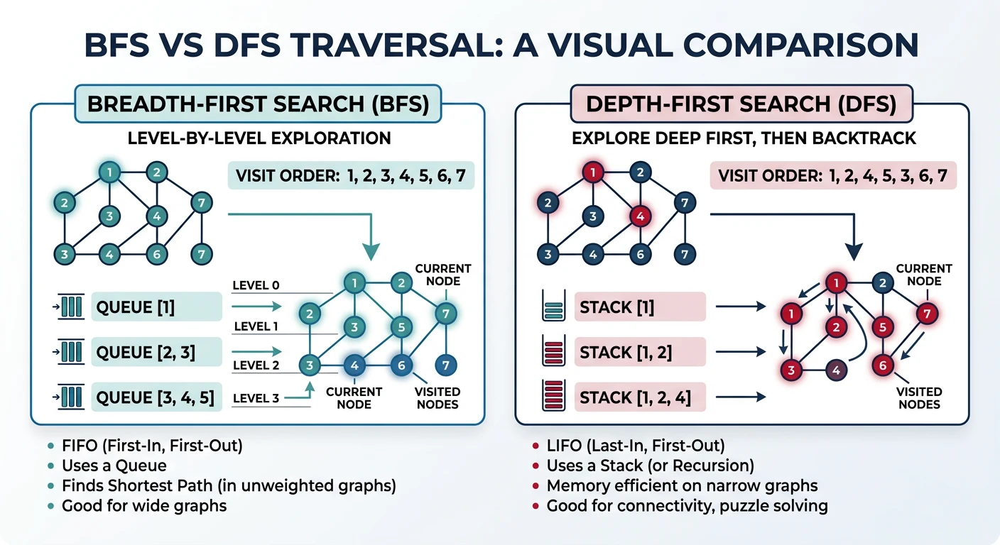

1. Why Graphs, Why Now
Parts 9 through 11 covered trees and heaps: structures with a single root, a fixed shape, and a clear notion of "up" and "down". Graphs drop those constraints. A graph is any collection of nodes and the connections between them, with no required root, no required hierarchy, and no limit on how many neighbors a node can have. A tree is simply a graph with no cycles and exactly one path between any two nodes - graphs are the more general model underneath social networks, road maps, dependency chains, and program call graphs.
This lesson is Part 12 of the Interview Foundations core series - previously an overloaded page that joined graphs, dynamic programming, greedy algorithms, and backtracking into a single lesson. That page is being split into six focused units so each algorithm family gets its own mental model and worked trace. This is the first: graph representations and the two traversal algorithms, BFS and DFS, that almost every other graph algorithm builds on.
2. Prerequisites
Two earlier lessons matter directly here. Read them first if either feels shaky:
- Part 2: Recursion Complete Guide - recursive DFS is just a call-stack trace. If tracing recursive calls and base cases is not yet automatic, review it before the DFS section below.
- Part 3: Arrays & Array ADT - the Number of Islands problem treats a 2D array as an implicit graph, where each cell is a node and its up/down/left/right neighbors are edges. Comfort with 2D array indexing and bounds checking is assumed.
3. Graph Fundamentals
A Graph is a collection of nodes (vertices) and edges connecting them. Graphs model relationships and networks, appearing frequently in interview problems.

Graph Terminology
- Directed: Edges have direction (A→B)
- Undirected: Edges go both ways (A—B)
- Weighted: Edges have costs/weights
- Cycle: Path that starts and ends at same node
- Connected: Path exists between all vertex pairs
Graph Representations
Choosing the right representation determines the efficiency of every graph algorithm. The Adjacency List maps each vertex to a list of its neighbors — space-efficient for sparse graphs ($O(V + E)$ space) and fast neighbor iteration. It's the default choice for most interview and production scenarios.
The Adjacency Matrix stores a $V \times V$ boolean/weight matrix where entry $[i][j]$ indicates an edge from $i$ to $j$. It enables $O(1)$ edge existence checks and is ideal for dense graphs (where $E \approx V^2$) or algorithms like Floyd-Warshall that iterate over all pairs. The tradeoff is $O(V^2)$ space regardless of actual edge count.
The Edge List is the simplest representation: just a flat list of $(u, v, weight)$ tuples. It's optimal for algorithms that iterate over all edges (Bellman-Ford, Kruskal's MST) and uses $O(E)$ space. However, finding neighbors of a specific vertex requires $O(E)$ scan, making it unsuitable for BFS/DFS.
4. Representation Tradeoff Table
The three representations above trade space, lookup speed, and iteration speed against each other. Use this table to pick one from the operation your algorithm performs most:
| Operation | Adjacency List | Adjacency Matrix | Edge List |
|---|---|---|---|
| Space | $O(V + E)$ | $O(V^2)$ | $O(E)$ |
| Add Edge | $O(1)$ | $O(1)$ | $O(1)$ |
| Edge Existence Check | $O(\deg(v))$ scan | $O(1)$ | $O(E)$ scan |
| Neighbor Iteration | $O(\deg(v))$ - direct | $O(V)$ - scans full row | $O(E)$ - scans all edges |
| Best For | Sparse graphs; most interview and production BFS/DFS | Dense graphs; all-pairs algorithms like Floyd-Warshall | Algorithms that iterate every edge: Kruskal's MST, Bellman-Ford |
5. BFS & DFS Traversal

flowchart TD
A["Graph Problem"] --> B{"What do you need?"}
B -->|"Shortest path
(unweighted)"| C["BFS"]
B -->|"Cycle detection
or exhaustive search"| D["DFS"]
B -->|"Shortest path
(weighted, no negatives)"| E["Dijkstra"]
B -->|"Shortest path
(negative edges)"| F["Bellman-Ford"]
B -->|"Connected
components"| G["BFS or DFS"]
B -->|"Topological
ordering"| H["DFS + finish time"]
C --> C1["Queue-based
O(V+E) time"]
D --> D1["Stack/Recursion
O(V+E) time"]
E --> E1["Priority Queue
O((V+E) log V)"]
F --> F1["Relax all edges V-1 times
O(V·E)"]
Interactive: BFS vs DFS Traversal
Step through both BFS and DFS on the same graph. Watch how the queue (BFS) explores level-by-level while the stack (DFS) dives deep before backtracking.
BFS vs DFS — Live Comparison
Click Next to step through BFS first, then DFS on the same graph.
Breadth-First Search (BFS)
BFS explores a graph level by level, visiting all neighbors at distance 1 before any at distance 2, and so on. It uses a queue (FIFO) to maintain the frontier. BFS naturally finds the shortest path in unweighted graphs because it discovers nodes in order of increasing distance from the source. Time: $O(V + E)$, Space: $O(V)$ for the visited set and queue.
When to use BFS: shortest path in unweighted graphs, level-order traversal, finding connected components, testing bipartiteness, or any problem where you need to explore "closest first" (like word ladder, minimum mutations, or maze shortest path).
Depth-First Search (DFS)
DFS explores as deep as possible along each branch before backtracking. It uses a stack (explicit or via recursion's call stack). DFS is the natural choice for problems requiring exhaustive exploration: detecting cycles, topological sorting, finding connected/strongly-connected components, and solving puzzles (mazes, Sudoku). Time: $O(V + E)$, Space: $O(V)$ for the visited set plus $O(h)$ stack depth.
Recursive vs Iterative: Recursive DFS is cleaner for tree-like structures, but risks stack overflow on deep graphs (100K+ nodes). Iterative DFS with an explicit stack handles arbitrary depth safely.
Number of Islands (Classic Graph Problem)
Given a 2D grid of '1's (land) and '0's (water), count the number of islands. An island is surrounded by water and formed by connecting adjacent lands horizontally or vertically. This is the canonical flood-fill / connected components problem: scan the grid; when you hit unvisited land, start a DFS/BFS to mark the entire island as visited, then increment the count. Each cell is visited at most once, giving $O(m \times n)$ time.
6. Exercises and Mastery
Easy
- Given a raw edge list such as
[(0,1), (0,2), (1,3)], build an adjacency list from it and print each vertex's neighbors.
Medium
- Clone Graph (LeetCode 133): given a reference to a node in a connected undirected graph, return a deep copy of the entire graph. Use DFS or BFS with a hash map from original node to its clone to avoid infinite loops on cycles.
Hard
- Given an undirected graph as an edge list, count the number of connected components. Run DFS or BFS from every unvisited vertex, incrementing a counter each time a traversal starts; the counter's final value is the component count.
Review rhythm: tomorrow, redraw the three representations from memory for the same small graph and reconstruct their tradeoffs without notes; next week, implement BFS and DFS in all three languages without the code widgets open; several weeks later, solve Number of Islands and Clone Graph back to back and notice how both reduce to "traverse, mark visited, don't revisit."
7. Summary Cheat Sheet
- A graph generalizes a tree: no required root, no required hierarchy, cycles allowed.
- Adjacency List: $O(V+E)$ space, fast neighbor iteration, the default for sparse graphs.
- Adjacency Matrix: $O(V^2)$ space, $O(1)$ edge existence check, best for dense graphs.
- Edge List: $O(E)$ space, best when an algorithm must scan every edge; poor for BFS/DFS neighbor lookups.
- BFS uses a queue and explores level by level; it finds shortest paths in unweighted graphs.
- DFS uses a stack (explicit or via recursion) and explores as deep as possible before backtracking; it suits cycle detection, component counting, and exhaustive search.
- Both BFS and DFS run in $O(V+E)$ time; a 2D grid (Number of Islands) is just a graph where neighbors are implicit.